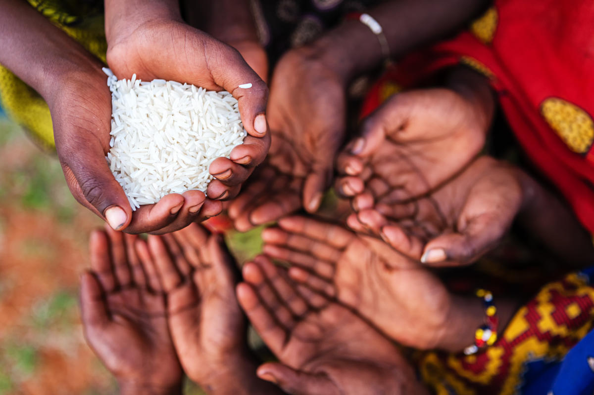
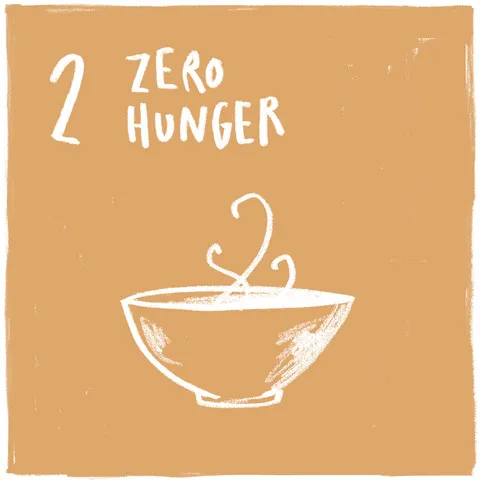

You Can Help Beat Hunger!

124 million people across 51 countries faced “crisis” levels of acute food insecurity or worse.
Donate to support hunger today!
End Hunger Today.

After decades of steady decline, the number of people who suffer from hunger – as measured by the prevalence of undernourishment – began to slowly increase again in 2015. Current estimates show that nearly 690 million people are hungry, or 8.9 percent of the world population – up by 10 million people in one year and by nearly 60 million in five years. The world is not on track to achieve Zero Hunger by 2030. If recent trends continue, the number of people affected by hunger would surpass 840 million by 2030. According to the World Food Programme, 135 million suffer from acute hunger largely due to man-made conflicts, climate change and economic downturns. The COVID-19 pandemic could now double that number, putting an additional 130 million people at risk of suffering acute hunger by the end of 2020. With more than a quarter of a billion people potentially at the brink of starvation, swift action needs to be taken to provide food and humanitarian relief to the most at-risk regions. At the same time, a profound change of the global food and agriculture system is needed if we are to nourish the more than 690 million people who are hungry today – and the additional 2 billion people the world will have by 2050. Increasing agricultural productivity and sustainable food production are crucial to help alleviate the perils of hunger.
The United Nations Department of Economic and Social Affairs. Unknown Date. ‘Goal 2: End hunger, achieve food security and improved nutrition and promote sustainable agriculture’, retrieved from
https://sdgs.un.org/goals/goal2